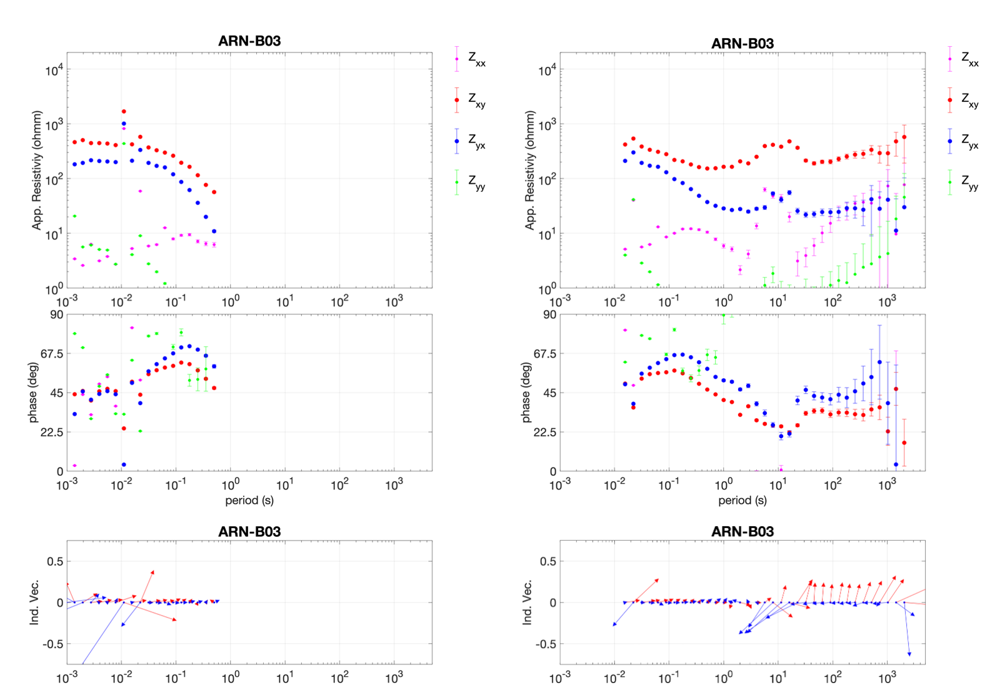
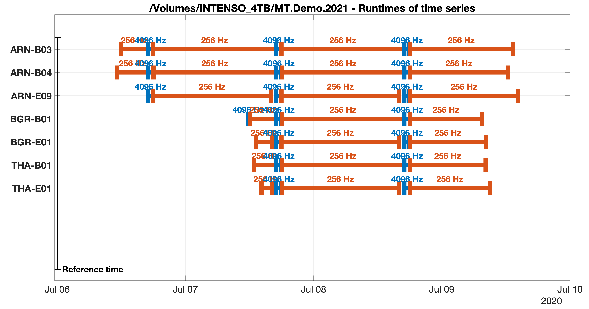

Magnetotellurics¶
MT processing determines the bivariate transfer function between the horizontal electric and vertical magnetic field components, \(E_{x}\), \(E_{y}\) and \(B_{z}\), and the two horizontal magnetic field components \(B_{x}\) and \(B_{y}\) in frequency domain. \(E_{x}\), \(E_{y}\) and \(B_{z}\) are denoted as output channels, or predicted channels, and \(B_{x}\) and \(B_{y}\) are the input channels, or predicting channels.
In standard MT setups, both the output and the input channels are recorded at the same location. A processing that uses channels from one single site is commonly denoted as single-site processing. In turn, inter-site processing relates output and input channels from separate sites. We denote the site that recorded the input channels as the base site and the site that recorded the output channels as the local site. In addition, single-site or inter-site processing estimates can sometimes be enhanced with a recording from a (clean) remote reference site. The reference channels correspond to the input channels, and the processing that uses reference channels to improve the estimates is denoted as remote-reference processing.
To generalize this, we solve the bi-variate regression problem
where \({\cal I}_{1,2}\) denote the two input channels and \({\cal O}_{i}\) is the \(i\textrm{-th}\) output channel. This equation applies to both single-site and inter-site processing and we offer the flexibility to define arbitrary channel combinations - with the only constraint that the neither input channels nor output channels are mixed across different stations, respectively.
A bit of physics behind the MT method: Animation to illustrate the skin-effect that describes the frequency-dependent attenuation of a plane wave electric field with depth. The amplitude of the field distribution decays exponentially as \(\sim e^{kz}\). \(\delta\) is the skin-depth, where the field has reached \(1/e\) of the surface amplitude.
Black-box examples¶
We first provide black box examples which make use of default settings and which to not provide any diagnostics. In case of high-quality data, these examples should readily give usable MT transfer functions.
ADU and EDE processing¶
We use a test data set that has been recorded with 5-ch ADU systems
and two-channel EDE systems in the Sauerland and the Harz mountains, Germany. ADU site names are ARN-B03,
ARN-B04, BGR-B01 and THA-B01; EDE site names
are ARN-E09, BGR-E01 and THA-E01. At these sites, overlapping recordings are available at several runs with \(4096\,\text{Hz}\)
and \(256\,\text{Hz}\) sampling rates, respectively. The measurement commenced on 07 June 2020.
Note: Some of the data used in the demo project are pretty noisy and shall only serve to illustrate the processing code.
First, we organize the data into a project folder structure, following the guidelines in the previous section (see Getting Started). The project is:
/Volumes/INTENSO_4TB/MT.Demo.2020
Within the project, we store the ADU recordings in:
./ARN-B03/ts/adc/ADU/meas*/*.ats
./ARN-B04/ts/adc/ADU/meas*/*.ats
./BGR-B01/ts/adc/ADU/meas*/*.ats
./THA-B01/ts/adc/ADU/meas*/*.ats
and the EDE recordings in:
./ARN-E09/ts/adc/EDE/meas*/*.ets
./BGR-E01/ts/adc/EDE/meas*/*.ets
./THA-E01/ts/adc/EDE/meas*/*.ets
Calibration files for the employed induction coils (MFS06, MFS07) are copied into the default folder:
./s/*
Note: Theoretical calibration functions are available for Metronix induction coils and will be used in case that the measured calibration files are not available.
To process the data, a script has to produced (see Getting Started) that contains the desired instructions, structured essentially into three sections: (1) importing data, (2) computing spectra and (3) estimating transfer functions.
Single-site black-box processing
For example, a script to perform automated single-site processing on site ARN-B03 using all default processing parameters can
be as short as follows:
%% Initialize
mt = MT('/Volumes/INTENSO_4TB/MT.Demo.2020', datetime(2020,06,07));
% Import time series for station ARN-B03, single site processing
mt.import('ARN-B03');
%% Compute Spectra
mt.spectra;
%% Estimate transfer functions
mt.estimate;
The processing will merge all runs at the same sampling rate for transfer function estimation, and loop over all available sampling rates.
The code should run through (may take a while though, but continuous output is produced to inform the progress) while computing and storing spectra and transfer functions (subdirectory trees are created if not existing). An error is in almost all cases due to some issue with the data files, the folder structure or missing files (e.g. calibration files).
In our example, the call generates single-site transfer functions separately for each sampling rate. The result looks as this (as noted, the demo data are somewhat noisy):
{kind=link}
MT response functions obtained from black-box single site processing of site ARN-B03. Left panels show the estimates for the
high-frequency run recorded at \(4096\, Hz\), right panels show the result for the \(256\, Hz\) run. From top to bottom, the panels
show apparent resistivities, phases and induction vectors.
As the default, spectra are stored in
./ARN-B03/fc/
and transfer functions are stored in
./ARN-B03/tf/*
In the above example the MT class interprets the imported site as the local site (because only only one site is imported) and thus performs a single-site processing using the standard MT channel combinations to estimate the impedance tensor and the vertical magnetic transfer function (if \(B_z\) is available).
Inter-site black-box processing
To perform inter-site processing, provide the base site as the second argument to the import call.
For instance, we wish to process the telluric recording at ARN-E09 against the horizontal magnetic channels at the site ARN-B03.
Then (omitting the initialization call), use:
% Import time series for station ARN-E09, ARN-B03, inter-site processing
mt.import('ARN-E09', 'ARN-B03');
%% Compute Spectra
mt.spectra;
%% Estimate transfer functions
mt.estimate;
Remote-reference
A remote-reference site can be passed as the third argument, e.g., using the remote site in the Harz, BGR-B01:
% Import time series for station ARN-E09, ARN-B03, BGR-B01, inter-site
% remote reference processing
mt.import('ARN-E09', 'ARN-B03','BGR-B01');
The MT class thus interprets the order of arguments upon import in terms of the objectives of single-site, inter-site
or remote reference processing as follows:
% single-site
mt.import(localsite);
mt.spectra;
mt.estimate;
% inter-site
mt.import(localsite,basesite);
mt.spectra;
mt.estimate;
% standard remote reference
mt.import(localsite,[],remotesite);
mt.spectra;
mt.estimate;
% inter-site remote reference
mt.import(localsite,basesite,remotesite);
mt.spectra;
mt.estimate;
If more sites are passed to the import routine, the first three are interpreted as shown above. Naturally, these definitions can be overwritten, as described below.
Lemi processing¶
Lemi data are recognized upon import, if provided in the correct folder tree. We currently support recordings
of type B423 only. (B423 is the extension of the data files.) For Lemi data, we expect that the B423 time series
are stored in (for example for site 0000B)
./0000B/ts/adc/B423/meas*/*.B423
as the default. Unfortunately, the header information in the data files is incomplete. Therefore, the import routine searches for an extra text file (siteinfo.txt)
in each data folder with the missing information, or generates a default siteinfo.txt template, which can be manually edited. The text file is read during import.
Therefore, after editing siteinfo.txt, the import call must be issued again. See Recorder for details.
Once, the data can be read correctly, the very same processing instructions as described above (and below) apply to Lemi data.
Step-by-Step guide¶
The MT class design¶
The MT class is not much more than a batch that shall make it
convenient to process MT data. An MT object, given the variable
name, say, mt, during initialization:
mt = MT(projectname,datetime(yyyy,mm,hh));
has the following important fields:
mt.ts
mt.sp
mt.tf
mt.mtset
mt.ts is an EMTS object, mt.sp is an EMSP object and mt.tf is an EMTF object. mt.mtset is an
MTSettings object and stores some settings relevant to MT. The processing relies large on the methods
provided my EMTS and EMSP.
See also: EMTS, EMSP, EMTF, MTSettings
Initialize, import time series, data overview¶
An arbitrary number of sites can be imported in one call. To initialize the demo project and to import all available sites, use:
mt = MT('/Volumes/INTENSO_4TB/MT.Demo.2020', datetime(2020,07,06));
mt.import('ARN-B03','ARN-B04','ARN-E09','BGR-B01','BGR-E01','THA-B01','THA-E01');
The import routines display some summary information during import such as sitenames, run numbers, pathnames, etc.. Sites can
only be imported into an existing project (i.e. a project that has been initialized before). If the project exists and
contains already sites (because the import had
been issued before), new sites are appended or they replace any existing sites of the same name. If the data reside in non-default directory trees,
the import methods will not find them. The default folder structure is defined in EMSettings (see there how to change default search paths)
and described in Recorder.
Note: MT searches for both time series and spectra file. Since no spectra are
available at the beginning, a warning will be issued during the attempt to import spectra. To avoid automated import of
both time series and spectra data, set the corresponding switches of mt.mtset ( see MTSettings for details), to false, e.g.
mt.setset('ImportTimeSeries',true);
mt.setset('ImportSpectra',false);
Note: Import means that only the header information of each data file is extracted and stored. Actual time
series or spectra files are usually too big to store in memory for an entire project.
See also: EMTS, EMSP, EMSettings, MTSettings,
Sitemap
A good way to get started with processing of MT data is to generate a map. We use the Matlab geoaxes map
utilities, a convenient way to plot geographical data. The default map layout uses basemap='topographic'.
To plot site locations on a map, use the plotsitemap method of either EMTS or EMSP and
provide the latitude and longitude limits of the survey area.
mt.ts.plotsitemap('LatitudeLimits',[50.2, 52.7],'LongitudeLimits',[7,12]);
mt.sp.plotsitemap('LatitudeLimits',[50.2, 52.7],'LongitudeLimits',[7,12]);
The former plots the sites for which time series have been successfully imported, the latter plots the sites for which spectra have been imported. Note that coordinates are extracted for the first available run for each available site.

Sitemap displaying the sites contained in the demo project. A zoom button can be activated on the top right of the Matlab figure, or zooming can be performed with gestures applicable to the computer in use.
To store the map as a graphics file, we recommend using
print(gcf,'-dpng','-r300','mapname.png');
See also: EMTS, EMTPlot, EMSP, EMFPlot,
Runtimes plot
Another important plot that helps preparing processing is a runtimes plot. Runtimes plots are also available for both time series and spectra data and can be invoked with:
mt.ts.plotruntimes;
mt.sp.plotruntimes;
where the former refers to imported time series data and the latter to imported spectra data. Runtimes for the demo project are summarized as follows:
{kind=link}
Runtimes plot, displaying the available time series data in the demo project, separated into available sampling rates.
Use this plot to identify time windows of interest, e.g. for plotting time series.
Note: Time series and spectra must not always cover the same time span, because spectra can also be computed on only a subset (e.g. certain time range, sampling rates) of data.
Note: The runtimes plot replaces the sitemap plot generated above. This is because the figure handle is stored and re-used (with the idea to plot the figures into handles contained GUI some time in the future). To release any plot related to time series, use:
mt.ts.emplot.hparent = [];
This will allow to generate a new figure for the next plotting command. An equivalent syntax applies to spectra figures.